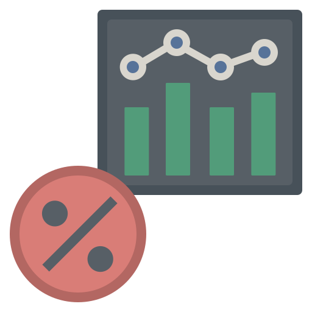
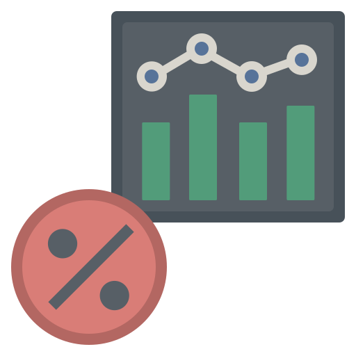

Данные Росстата
Преобразование данных Росстата из Excel в Pandas DataFrames и визуализация некоторых статистических параметров.
 Ссылка на репозиторий Профиль Github
Профиль Github
Преобразование данных Росстата из Excel в Pandas DataFrames и визуализация некоторых статистических параметров.
 Ссылка на репозиторий
Профиль Github
В качестве примера используется таблица Росстата 'Индексы потребительских цен на товары и услуги' с 1991 по 2023.
Базовые значения - средние цены за январь 2021 года.
В период с января 2021 по октябрь 2023 года хлеб подорожал на 20%. Заметное снижение стоимости пшеницы с мая 2022 года не привело к уменьшению цены хлеба, но приостановило её дальнейший рост.